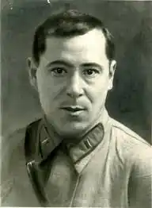

Народився 2 лютого 1906 року в с. Мустафіно Оренбурзької губернії. Був шостою дитиною в татарській родині Рахіми та Мустафи Залілових. В пошуках кращої долі, сім'я перебралася до губернського центру, м. Оренбурга. Мати, яка була дочкою мулли, відвела Мусу до мусульманської духовної школи-медресе "Хусаінія". Школа, за радянської влади, з релігійного закладу виросла — до Татарського інституту народної освіти. Отримав посвідчення техніка, закінчивши навчання на робітничому факультеті при педагогічному інституті.
У рідному селі Мустафіно створив комсомольський осередок, члени якого воювали з ворогами революції. Як активіст, був обраний в Бюро Татаро-Башкирської секції ЦК ВЛКСМ — делегатом всесоюзного комсомольського з'їзду.
У 1927 році вступив на навчання до Московського державного університету, на літературне відділення етнологічного факультету. Член ВКП(б) — з 1929 року. У 1941 році був призваний до Червоної армії. Воював на Ленінградському та Волховському фронтах армії СРСР, був кореспондентом воєнно-фронтової газети "Отвага", яка пропагувала комунізм, войовничий атеїзм та ненависть за національною ознакою. У червні 1942 року був важко поранений та потрапив у німецький полон. Після одужання, добровільно вступив до антисталінського легіону "Ідель-Урал", утвореного з полонених татар, башкирів і представників інших країн Надволжя — Мордовії, Удмуртії, Марій Ел, Чувашії. Довгий час приховував своє справжнє ім'я — аби не наразитися на розстріл, як колишній член ВКП(б). Працював у відділі пропаганди Легіону, де обстоював ідею державної незалежності Татарстану у післявоєнний час. Разом з Абдуллою Алішем брав активну участь у поширенні антифашистських листівок. Користуючись тим, що йому доручили вести культурно-просвітницьку роботу, Джаліль, роз'їжджаючи по таборах для військовополонених, встановлював конспіративні зв'язки і під виглядом відбору самодіяльних артистів для створеної в легіоні хорової капели вербував нових членів підпільної організації. Він був пов'язаний з підпільною організацією під назвою "Берлінський комітет ВКП (б)". Перший батальйон легіону "Ідель-Урал" підняв повстання і приєднався до білоруських партизанів у лютому 1943 року. У серпні 1943 року гестапо заарештувало Джаліля і більшість членів його підпільної групи за кілька днів до ретельно підготовлюваного повстання військовополонених. За участь у підпільній організації, був страчений на гільйотині 25 серпня 1944 року у в'язниці Плетцензее в Берліні. Перший твір був надрукований в 1919 році у військовій газеті "Кызыл йолдыз" ("Червона зірка"). У 1925 році, в Казані, вийшла перша збірка поем — "Барабыз" ("Ми йдемо"). У 1934 році побачила світ збірка "Орденоносні мільйони", а слідом за ним — "Вірші і поеми", "Джиган" (1939), "Листоноша" (1940). Також Джаліль написав чотири лібрето для опер "Алтын чэч" (1941) та "Ільдар" (1941). В 1941 році, за два тижні до початку війни, для опери "Алтинчеч" ("Золотоволоса") Державна премія СРСР, 1948, посмертно), що оповідала про героїзм племені булгар, які не скорилися іноземним загарбникам, ним був перероблений в лібрето героїчний епос "Джік Мерген", казки та перекази татарського народу. Виступав як критик, публіцист. Відвідував Україну, перекладав твори Тараса Шевченка. Україні присвятив вірш "Братерство" (березень 1942, Волховський фронт), написаний в термінах радянської пропаганди про "братній союз". У роки Другої світової війни також вийшли збірки поезій "Клятва", "Листи з окопу". Вірші, написані в 1942—1944 роках у в'язниці, увійшли до збірки "Моабітський зошит" (Ленінська премія, 1957, посмертно) (тат. Moabit dəftəre, Моабит дәфтәре), але до нащадків дійшли тільки 115 з них.